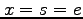

MATP6640/DSES6770 Linear Programming,
Homework 5.
Due: Friday, April 21, 2006.
- Let be a nondegenerate basic feasible solution for the standard
form linear programming problem
.
Let , where is a diagonal matrix with for
. Simplify , the projection matrix onto the
nullspace of .
Hence show that
.
- The Monteiro-Adler short step algorithm presented in class (Algorithm SPF
on page 86 of Wright) could be used as an infeasible interior point
method, starting with , , and .
Give an example to show that in this case we may not be able
to take a step of length 1 and we may need to take a linesearch to
preserve nonnegativity.
(Note: We solve (1.20) to find the directions given in (1.25)
at each iteration. Hint: you only need look at small examples.)
- Consider the primal-dual pair of linear programming problems:
where and are -vectors, and are -vectors,
and is an matrix.
Let and ,
where  denotes the vector where every component is equal to one.
Let
.
Now consider the linear programming problem
denotes the vector where every component is equal to one.
Let
.
Now consider the linear programming problem
where and are scalars.
An interior point method can be used to find a strictly complementary
optimal solution to .
In such a solution, if the primal variable is equal to zero then
the corresponding dual slack is strictly positive.
Use this result to show that if in a strictly complementary
optimal solution then either there exists a vector with and
or there exists a vector with and  .
.